- Navigate to your User Group 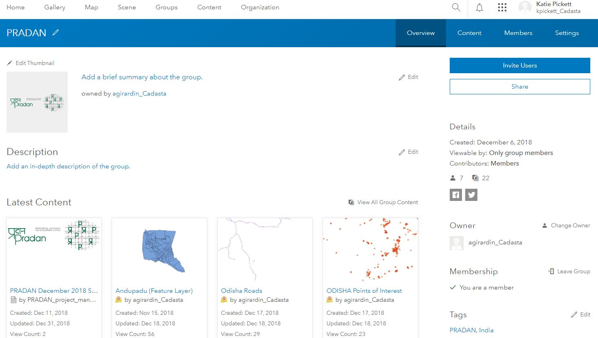
Find the Field Collector Map (Web Map) you used to collect the polygons
Select the Web Map
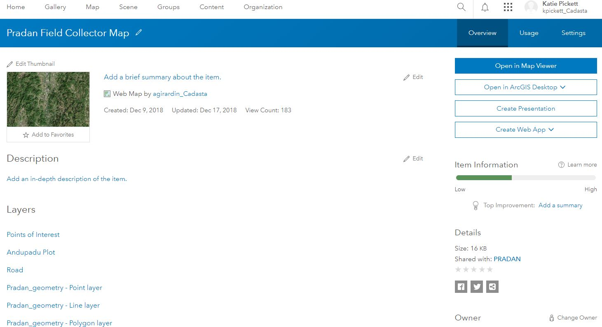
Press the Open in Map Viewer button
See the Map Viewer Overview
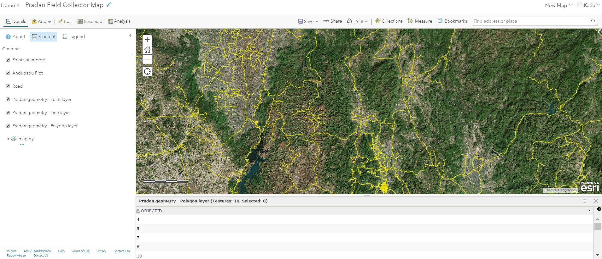
Select Content

See the Map Viewer Content Sidebar 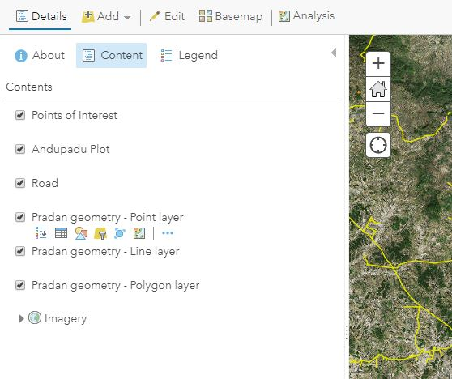
Hover the mouse over the polygon layer
You will see multiple options. Select Show Table
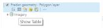
See Show Table view
Click More Options within the table sub-window 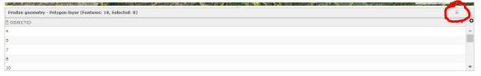
Select Show/Hide Columns
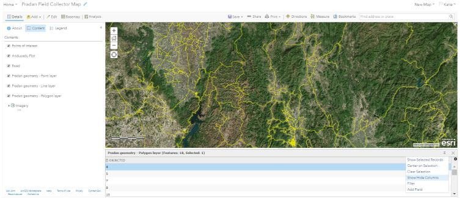 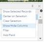
You can toggle columns on and off by checking and unchecking the boxes next to the column names
Note: In this example, only the OBJECTID column is toggled on and showing
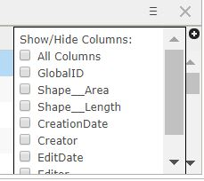 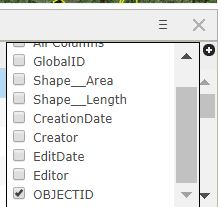
See when additional columns are toggled on 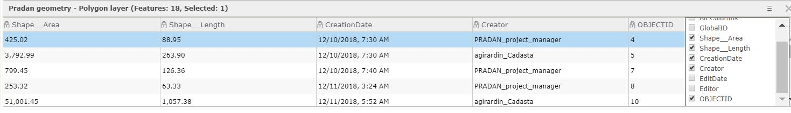
Click More Options
Select Center on Selection
Note: The Selected Record in this example is OBJECTID 4
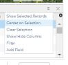
See OBJECTID 4 Selection in Map Viewer 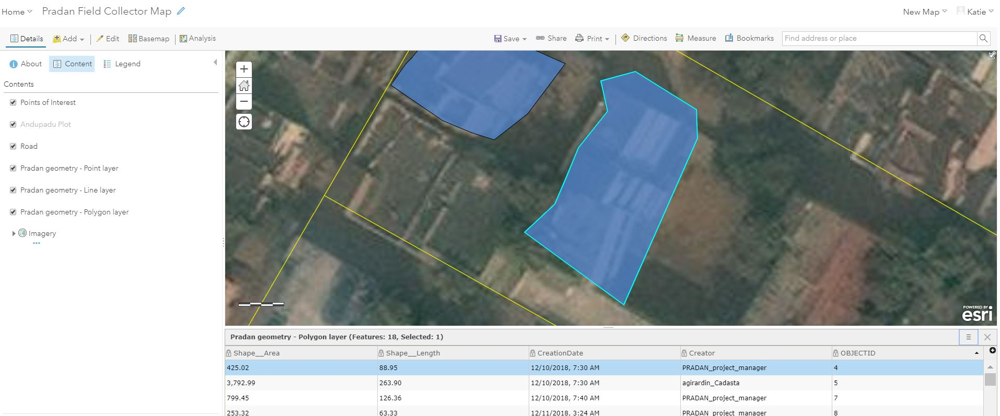
Click on the selected polygon record to see the associated pop-up
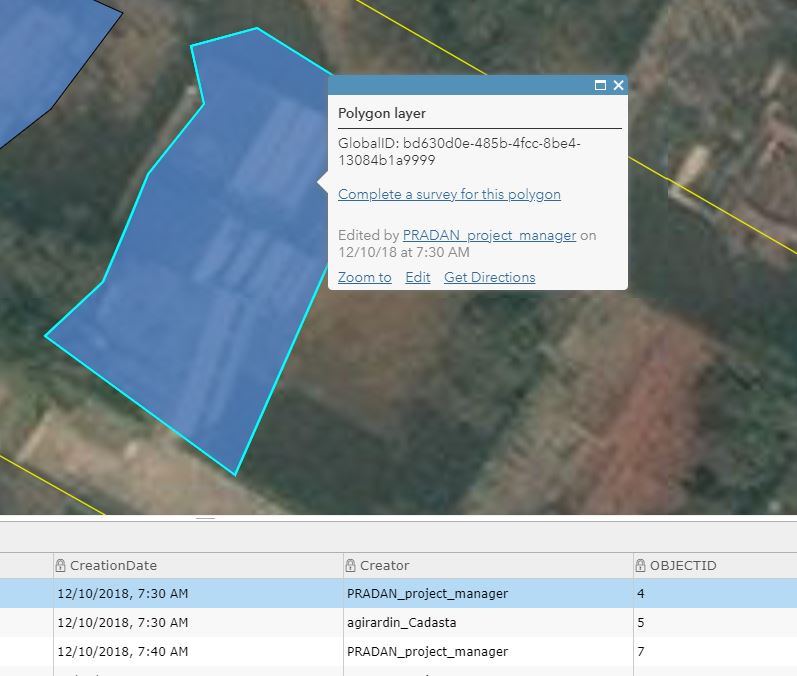
Select Edit in the pop-up to edit the polygon
See the Edit pop-up window
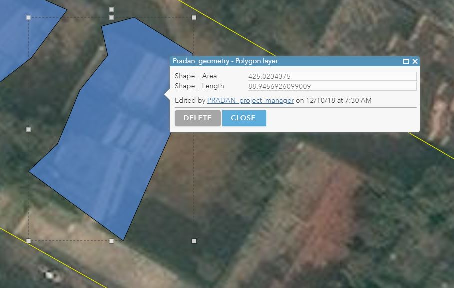
Press Delete to delete the selected polygon feature
- Press Close to stop editing